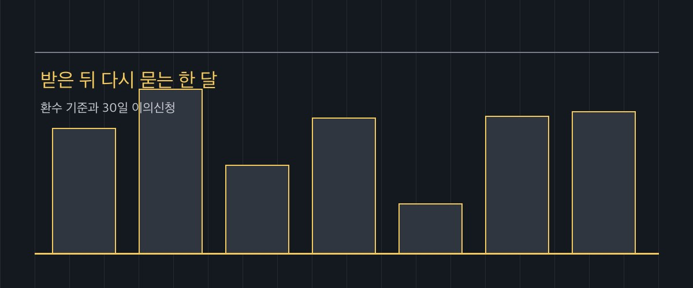

긴급복지지원 환수 기준 2026 — 먼저 받고 나서 조사받을 때 돌려막는 금액과 30일 이의신청
발행일 2026-09-30

30초 요약
| 항목 | 내용 |
|---|---|
| 누가 | 긴급복지지원(생계·의료·주거 등)을 이미 받았거나 받고 있는 가구. 신청을 망설이고 있는 가구도 같은 기준을 미리 대조할 수 있다 |
| 기준 | 소득 기준 중위소득 75% 이하(2026년 1인 월 192만 3,179원, 4인 487만 1,054원) + 재산 합계 대도시 2억 4,100만·중소도시 1억 5,200만·농어촌 1억 3,000만 원 이하(주거용 재산은 대도시 6,900만 원까지 빼줌) |
| 조사 | 지원 결정일부터 1개월 이내 사후조사(금융 조사만 예외). 시·군·구청이 국세·건강보험·국민연금·고용보험 전산으로 소득·재산을 대조 |
| 환수 | 부적정 판정이면 지원 중단 + 비용 전액 또는 일부 환수. 명령에 안 따르면 지방세 체납처분의 예로 징수 |
| 불복 | 처분 통지를 받은 날부터 30일 이내 이의신청. 시·군·구는 10일 내 시·도로 서류 송부, 시·도는 15일 내 서면 통보 |
1. 누가 조사받냐
긴급복지지원의 큰 원칙은 먼저 지원하고 나중에 조사하는 것입니다. 위기상황이 확인되면 서류가 다 갖춰지기를 기다리지 않고 지원이 먼저 나갑니다. 대신 지원받았거나 받고 있는 가구는 예외 없이 사후조사 대상이 됩니다. 받았다고 끝나는 게 아니라, 한 달 안에 시·군·구청이 다시 들여다본다고 생각하는 편이 정확합니다.
조사를 본인이 직접 하진 않습니다. 담당 부서가 금융·국세·지방세·건강보험·국민연금·고용보험 전산망으로 소득과 재산을 대조합니다. 여기서 보는 두 줄은 이겁니다.
- 소득: 기준 중위소득의 75% 이하. 2026년 기준 1인 가구 월 192만 3,179원, 4인 가구 487만 1,054원 이합니다.
- 재산: 지역별 합계액 기준 이하 — 대도시 2억 4,100만 원, 중소도시 1억 5,200만 원, 농어촌 1억 3,000만 원. 여기서 주거용 재산은 대도시 6,900만 원(중소도시 4,200만, 농어촌 3,500만)까지 빼줍니다.
2. 얼마를 돌려막냐 — 판정별 금액
사후조사와 적정성 심사 결과는 네 갈래로 나뉩니다. 표로 보면 이렇습니다.
| 판정 | 처리 | 돌려막는 범위 |
|---|---|---|
| 적정 | 지원 그대로 종료(위기 지속 시 심의 거쳐 연장) | 해당 없음 |
| 거짓·부정 수급 | 지체 없이 지원 중단 | 지원 비용의 전액 또는 일부 — 심의위원회 결정에 따라 반환해야 하는 의무 |
| 부적정 | 지원 중단 | 지원 비용의 전액 또는 일부 반환 가능(재량) |
| 지원기준 초과분 | 기준을 넘어간 만큼만 | 초과 지원 상당분만 반환 |
1인 가구가 생계비 3개월분(월 783,000원, 총 234만 9,000원)을 받고 사후조사에서 소득이 기준을 살짝 넘긴 게 확인되면, 논의되는 금액은 최대 그 234만 9,000원입니다. 반대로 지원기준을 일부만 넘긴 경우엔 넘은 초과분만 반환 대상이 됩니다. 전체를 토해내는 것과 초과분만 내는 것 사이엔 금액 차이가 크니, 통지서에 적힌 반환 상당분의 계산 근거를 먼저 확인해야 합니다.
이 건은 체납으로 번질 수 있는 채무입니다. 반환 명령에 따르지 않으면 지방세 체납처분의 예에 따라 징수됩니다. 독촉 단계에서 나눠 낼지 다툴지 정하는 편이 체납처분 이후보다 훨씬 덜 아픕니다.
3. 제외·주의
- 기한 30일은 통지일 기준입니다. 이의신청은 처분을 고지받은 날부터 30일 이내. 접수일이나 우체국 소인이 아니라 통지 시점 기준으로 세니, 통지서를 받은 날짜를 적어두세요.
- 압류 금지가 환수까지 막아주진 않습니다. 긴급지원금 자체와 그 계좌의 채권은 압류 대상이 아니지만, 이미 받은 돈이 부적정 판정을 받아 되돌려줄 돈이 되는 것은 별개입니다.
- 지원금을 목적 외로 옮기면 안 됩니다. 생계 유지 외에 쓰려고 양도하거나 담보로 제공하는 것은 금지되어 있습니다.
- 담당 공무원의 정보유출은 범죄입니다. 조사로 얻은 자료를 지원 목적 외로 쓰거나 다른 사람·기관에 주면 3년 이하 징역 또는 3천만 원 이하 벌금 대상입니다. 조사 과정에서 내 정보가 어디로 가는지 궁금하다면 이 조항을 근거로 물을 수 있습니다.
- 받은 뒤 형편이 나아졌다고 알리지 않는 건 별개 문제입니다. 소득·재산 변동은 조사로 드러나고, 그때의 초과분이 반환 논의 대상이 됩니다.
4. 서류
사후조사 단계에서 보통 본인에게 새로 요구하는 서류는 없습니다. 전산 대조가 중심입니다. 다만 소득의 소명(퇴직 시점, 사업 중단 시점, 원천징수 내역의 공백 기간)을 요구받거나, 통장·금융 내역 확인에 필요한 위임 서류를 요청받을 수 있습니다. 이의신청 단계에서는 처분 통지서, 그리고 소득·재산 산정이 잘못됐다면 그 근거 자료(최근 소득 변동 증빙, 재산 공제 누락 내역 등)를 함께 내는 편이 효과적입니다.
5. 순서
- 지원 결정·지급 — 현장 확인으로 위기상황이 확인되면 지원 종류와 금액을 정해 계좌로 입금합니다.
- 사후조사 — 지원 결정일부터 1개월 이내(금융 조사 제외)에 적정성을 조사합니다.
- 적정성 심사 — 긴급지원심의위원회가 적정·부적정·연장·종료와 환수 범위를 결정합니다.
- 반환 절차 — 환수가 정해지면 납부 통지 → 납부 독촉 → 체납처분 순서로 진행됩니다.
- 이의신청 — 통지받은 날부터 30일 이내 시·군·구에 신청. 시·군·구는 10일 내 시·도로 서류를 보내고, 시·도는 15일 내 이의신청인과 시·군·구에 서면 통보합니다.
6. 안 될 때
30일을 넘겼다면 이의신청 길은 사실상 닫힙니다. 이때는 환수 금액 자체를 다투기보다 납부 방식을 협상하는 편이 현실적입니다. 시·군·구청 담당 부서와 분할 납부, 납부 유예를 상담할 수 있습니다.
산정 근거가 틀린 경우는 이의신청에서 다퉈볼 여지가 있습니다. 소득으로 잡힌 시점과 실제 소득 상실 시점이 어긋나거나, 주거용 재산 공제·부채 차감이 누락된 경우가 전형적입니다. 통지서에 적힌 소득·재산 산정 내역을 기준으로 어느 칸이 틀렸는지 짚어서 적어내세요.
아직 신청 전이라면 — 환수가 무서워 신청 자체를 미룰 필요는 없습니다. 기준 충족 여부는 지원이 나간 뒤 조사에서 판단하는 구조이고, 애매하다고 신청하지 않는 것이 정답은 아닙니다. 위기가 확인되면 지원이 먼저 나갑니다.
기준 금액과 지급액은 고시 개정에 따라 해마다 바뀝니다. 실제 환수 여부와 범위는 관할 시·군·구청과 긴급지원심의위원회의 결정에 따르며, 이 글은 특정 가구의 결과(지급·환수)를 보증하지 않습니다.
바로 가기
- 보건복지상담센터 129(국번 없이 · 무료) — 평일 9~18시, 긴급 상담은 24시간
- 복지로 — 긴급복지지원 신청·안내
- 보건복지부 — 긴급복지지원 제도 안내
- 법제처 생활법령 — 긴급복지지원
같이 읽기
- 긴급복지지원 — 생계·의료·주거를 하루 안에 신청하는 법 — 지원 자체의 자격·금액·신고 방법 총정리
- 청년월세 지원, 9월 선정 발표에 맞춰 지금 할 일 — 지원금 사후 관리가 따라오는 다른 제도도 같은 구조
- 두루누리 사회보험료 지원 — 소득 기준이 겹친다면 함께 볼 수 있는 제도